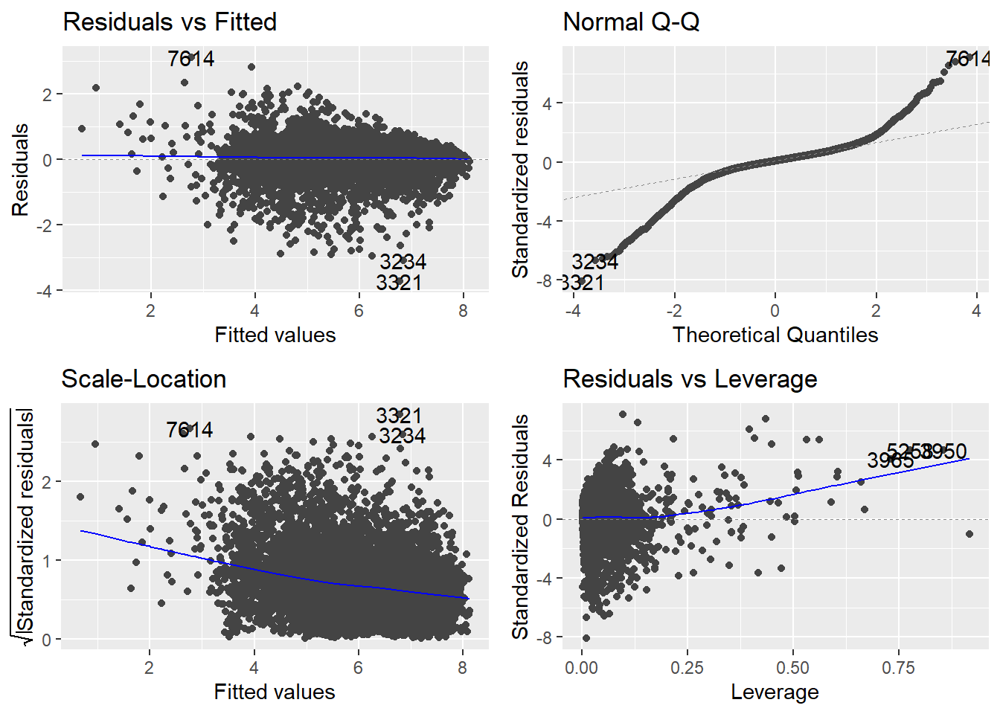
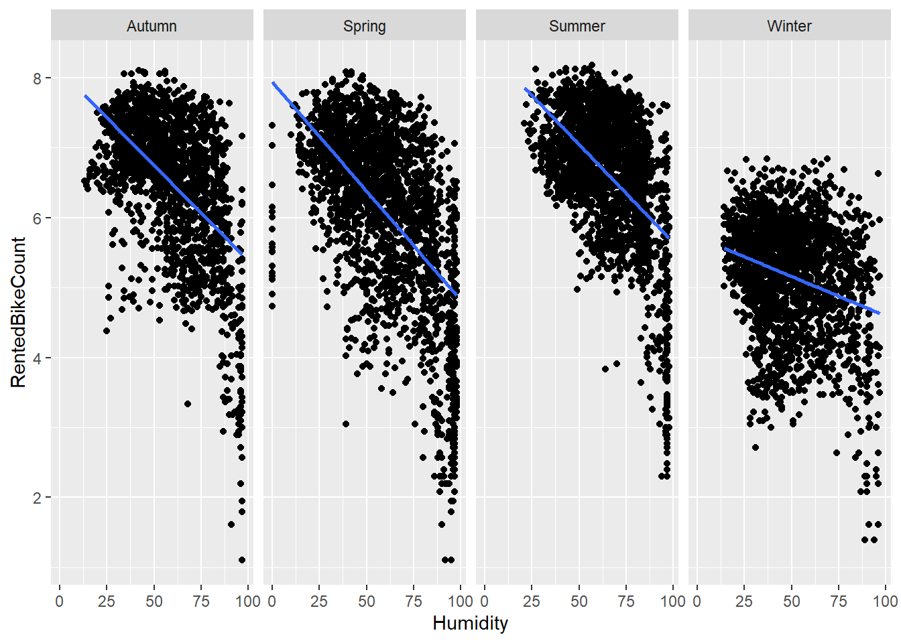
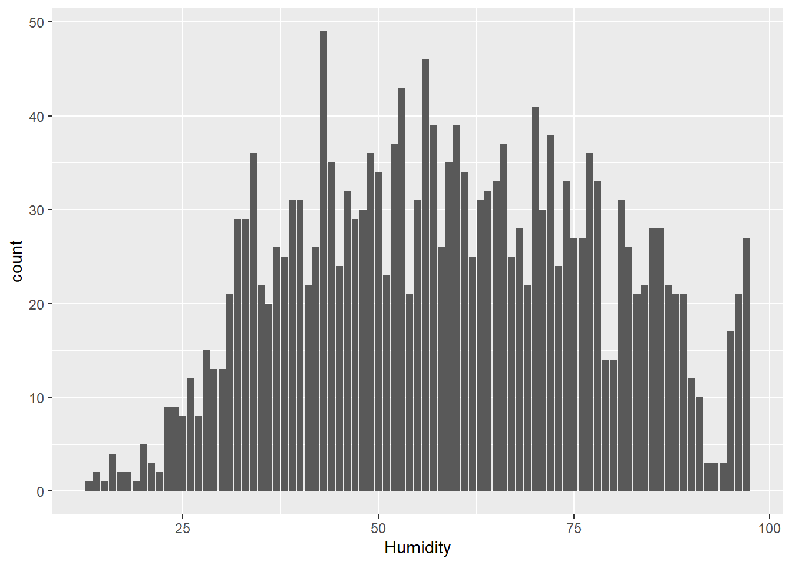

seasons = unique(seoul$Seasons)
Temp = seoul[c("Time", "Temperature", "Seasons")]
season.base = "IsSpring"
season.dummies = setdiff(c("IsWinter", "IsSpring", "IsSummer", "IsAutumn"), season.base)
time.base = "Hour1624"
time.dummies = setdiff(c("Hour09", "Hour1015"), time.base)
seoul.factors = c("Temperature", "Humidity", "DewPointTemp",
"WindSpeed", "Visibility", "SolarRadiation", "Rainfall",
"Snowfall", time.dummies)
seoul.change = c()
for(factor in seoul.factors){
change_factor = str_c(factor, "Change")
seoul.change = c(seoul.change, change_factor)
seoul[change_factor] = NA_real_
for(s in seasons){
seoul.subset = seoul %>% filter(Seasons == s)
seoul[seoul$Seasons == s, change_factor] = seoul.subset[factor]-lag(seoul.subset[factor], n=1)
}
}
seoul.interaction = c()
seoul.base = c(time.base)
#All 2d Interaction Effects
continuous_interactions = combn(setdiff(seoul.change,
c(str_c(time.dummies, "Change"),
str_c(season.dummies, "Change"),
"TemperatureChange")), 2)
for(i in 1:ncol(continuous_interactions)){
factor = paste(continuous_interactions[,i], collapse = "X")
seoul.interaction = c(seoul.interaction, factor)
seoul[factor] = NA_real_
for(s in seasons){
seoul.subset = seoul %>% filter(Seasons == s)
seoul[seoul$Seasons == s, factor] = seoul.subset[continuous_interactions[1,i]]*
seoul.subset[continuous_interactions[2,i]]
}
}
#Time Interaction Effects
for(factor in setdiff(seoul.change,
c(str_c(time.dummies, "Change"),
"TemperatureChange"))){
for(time in str_c(time.dummies, "Change")){
factor.interaction = str_c(factor, "X", time)
seoul.interaction = c(seoul.interaction, factor.interaction)
seoul[factor.interaction] = NA_real_
for(s in seasons){
seoul.subset = seoul %>% filter(Seasons == s)
seoul[seoul$Seasons == s, factor.interaction] = seoul.subset[factor]*
seoul.subset[time]
}
}
}
###### Rented Bike Count Model
time.bike = c()
for(h in unique(seoul$Hour)){
factor = str_c("Hour", h)
seoul[factor] = as.numeric(seoul$Hour == h)
time.bike = c(time.bike, factor)
}
time.bike.base = "Hour0"
time.bike = setdiff(time.bike, time.bike.base)
a = 1 #1 is excluded for base dummy
time.humidities = str_c("Humidity",setdiff(1:10, a))
for(h in 1:length(time.humidities)){
h.min = (h-1+a)*10
h.max = (h+a)*10
seoul[time.humidities[h]] = 1*(seoul$Humidity >= h.min &
seoul$Humidity < h.max)
}
bike.dummies = c("IsHoliday")
seoul.bike.factors = c("RentedBikeCount", time.humidities, "Temperature",
"WindSpeed", "Visibility", "DewPointTemp",
"SolarRadiation", "ExtremeWind",
"Rainfall", "Snowfall", bike.dummies, time.bike,
season.dummies)
seoul$ExtremeWind = 1*(seoul$WindSpeed > quantile(seoul$WindSpeed, 0.95))
#Transform Visibility
seoul$Visibility = -sqrt(seoul$Visibility)
seoul.bike.interaction = c()
seoul.bike.base = c(time.bike.base)
continuous_interactions_bike = combn(setdiff(seoul.bike.factors,
c(time.bike, season.dummies,
time.humidities,
"RentedBikeCount")), 2)
for(i in 1:ncol(continuous_interactions_bike)){
factor = paste(continuous_interactions_bike[,i], collapse = "X")
seoul.bike.interaction = c(seoul.bike.interaction, factor)
seoul[factor] = seoul[continuous_interactions_bike[1,i]]*
seoul[continuous_interactions_bike[2,i]]
}
for(factor in setdiff(seoul.bike.factors,
c(time.bike, season.dummies, "RentedBikeCount"))){
for(time in time.bike){
factor.interaction = str_c(factor, "X", time)
seoul.bike.interaction = c(seoul.bike.interaction, factor.interaction)
seoul[factor.interaction] = seoul[factor]*seoul[time]
}
}
#Seasonal Interactions
for(factor in setdiff(seoul.bike.factors,
c(season.dummies, "RentedBikeCount"))){
for(s in season.dummies){
factor.interaction = str_c(factor, "X", s)
seoul.bike.interaction = c(seoul.bike.interaction, factor.interaction)
seoul[factor.interaction] = seoul[factor]*seoul[s]
}
}
#Humidity and Other Weather Effects
for(factor in setdiff(seoul.bike.factors,
c(time.bike, season.dummies,
time.humidities,
"RentedBikeCount"))){
for(humidity in time.humidities){
factor.interaction = str_c(factor, "X", humidity)
seoul.bike.interaction = c(seoul.bike.interaction, factor.interaction)
seoul[factor.interaction] = seoul[factor]*seoul[humidity]
}
}
seoul[complete.cases(seoul[seoul.change]), ] -> seoul.tempFinal Project Template
Abstract
Here, you will briefly summarize the entire report, including the data used, questions of interest, and relevant findings.
1 Problem and Motivation
In this section, you will describe the background information about the study that is necessary to understand why the data are important. In other words, why was it important to gather the data in the first place?
1.1 Data Description
Briefly state the source of your data and describe the relevant variables that you will use in your project. Include important details such as units for the different variables, and what the ``observational units” (rows in the data set) represent (e.g., individuals, countries, etc.)
1.2 Questions of Interest
Briefly and clearly state the two main questions that you will investigate throughout the report. These questions should be stated in scientific, and not statistical language. For example, “Is the slope of log of per capita GDP significantly different from zero?” should instead by give as “Does the log of per capita GDP have an effect on the average life expectancy of females in a given country?”
1.3 Regression Methods
For each question of interest listed in Section 2, describe what regression models, techniques, and tools you will use to fully answer it. These should include any plots you will use for exploratory analysis or diagnostic checks, as well as methods of inference you will use.
In order to estimate the short-run fluctuations in temperature we used a first-differences regression model. We hypothesized that since there are seasonal effects that are unobservable in our data set the error term, \(\epsilon\) is composed of a season-specific error term, \(\alpha_{s}\) and other random effects that also vary by the time period (\(t\)). Hence, \(\epsilon_{st} = \alpha_{s} + \eta_{st}\). Let \(s\) denote the season and \(t\) denote time. For our data set-specific purposes, we will seek to understand how \(\text{Temperature}_{st}\) changes with respect to each season and hour (\(t\)).
Hence, for our simple multivariate regression model, if
\(\text{Temperature}_{st} = \beta_0 + \beta_1\text{Humidity}_{st} + \beta_2\text{DewPointTemp}_{st} + \beta_3\text{WindSpeed}_{st} + \beta_4\text{SolarRadiation}_{st} + \beta_5\text{Rainfall}_{st} + \beta_6\text{Snowfall}_{st} + \beta_7I(0 \leq \text{Hour}_t < 10) + \beta_8I(10 \leq \text{Hour}_t < 16) + \alpha_{s} + \eta_{st}\)
Then,
\(\text{Temperature}_{st-1} = \beta_0 + \beta_1\text{Humidity}_{st-1} + \beta_2\text{DewPointTemp}_{st-1} + \beta_3\text{WindSpeed}_{st-1} + \beta_4\text{SolarRadiation}_{st-1} + \beta_5\text{Rainfall}_{st-1} + \beta_6\text{Snowfall}_{st-1} + \beta_7I(0 \leq \text{Hour}_{t-1} < 10) + \beta_8I(10 \leq \text{Hour}_{t-1} < 16) + \alpha_{s} + \eta_{st-1}\)
Thus, we wish to estimate,
\(\Delta\text{Temperature}_{st} = \beta_1\Delta\text{Humidity}_{st} + \beta_2\Delta\text{DewPointTemp}_{st} + \beta_3\Delta\text{WindSpeed}_{st} + \beta_4\Delta\text{SolarRadiation}_{st} + \beta_5\Delta\text{Rainfall}_{st} + \beta_6\Delta\text{Snowfall}_{st} + \beta_7\Delta I(0 \leq \text{Hour}_t < 10) + \beta_8 \Delta I(10 \leq \text{Hour}_t < 16) + \Delta\eta_{st}\)
This eliminates the \(t-1\) temperature dependency (and all other lagged dependencies for \(t-1\) in \(X\)) and isolates the short-run change in temperature, which is what we seek to estimate.
In order to estimate the hourly demand for bike sharing in Seoul. Similar to our model for temperature, we have unobserved seasonal effects in \(\epsilon\). However, exploratory data analysis has shown that current bike demand is not strongly dependent on the bike demand from \(t-1\). Instead of using a first-difference approach, we will use a fixed effects models to include the seasonal effects for \(s-1\) (3) seasons to obtain unbiased estimates.
Hence, our basic fixed effects multivariate model for measuring the demand for rented bikes in Seoul will be interpreted as,
\(ln(\text{RentedBikeCount}_{st}+1) = \beta_0 + \beta_1I(10 \leq Humidity_t < 20) + ... + \beta9I(90 \leq Humidity_t < 100) + \beta_{10}\text{Temperature}_{st} + \beta_{11}\text{WindSpeed}_{st} + \beta_{12}\sqrt{\text{Visibility}_{st}} + \beta_{13}I(\text{ExtremeWind}_{st} = \text{Yes}) + \beta_{14}\text{DewPointTemp}_{st} + \beta_{15}\text{SolarRadiation}_{st} + \beta_{16}\text{Rainfall}_{st} + \beta_{17}\text{Snowfall}_{st} + \beta_{18}I(\text{Day}_t = Holiday) + \beta_{19}I(\text{Hour}_t = 1) + ... + \beta_{41}I(\text{Hour}_t = 23) + \beta_{42}I(\text{Season}_s = Winter) + \beta_{43}I(\text{Season}_s = Summer) + \beta_{44}I(\text{Season}_s = Autumn) + \eta_st\)
2 Analyses, Results, and Interpretation
Conduct the analysis in a logical fashion, including necessary code (and not any superfluous code) and its output. Give simple interpretations of your findings related to the questions of interest.
corrplot(cor(seoul[seoul.bike.factors]), type = "upper")corrplot(cor(seoul.temp[seoul.change]), type="upper")seoul.temp %>% ggplot()+
geom_point(aes(x=Hour, y=TemperatureChange))+
facet_grid(~Seasons)threshold = 0
seoul %>% mutate(IsPrecip=(Rainfall+Snowfall) > threshold) %>% ggplot()+
geom_point(aes(x=Hour, y=RentedBikeCount, color=IsPrecip))+
facet_grid(~Seasons)
seoul %>% ggplot()+
geom_point(aes(x=Hour, y=RentedBikeCount, color=FunctioningDay))+
facet_grid(~Seasons)seoul %>%
filter(FunctioningDay == "Yes") -> seoul
seoul.temp %>% ggplot()+
geom_boxplot((aes(y=TemperatureChange, x=Seasons)))seoul.temp %>% ggplot()+
geom_point(aes(x=DewPointTempChange, y=TemperatureChange))+
facet_grid(Hour09+Hour1015~Seasons)# create_season_models = function(factors, response, base=F){
# factors = setdiff(factors, response)
# if(base == T){
# f = 0
# } else {
# f = paste(c(0, factors), collapse = " + ")
# }
#
# models <- map(unique(seoul$Seasons), function(x){
# lm(formula(paste(response, "~", f)),
# data = seoul[seoul$Seasons == x,] %>%
# select(all_of(c(factors, response))))
# })
#
# names(models) <- str_c("seoul.lm.", unique(seoul$Seasons))
# return(models)
# }
#
# models.lm = create_season_models(seoul.change, "TemperatureChange")
#
# for(model in models.lm){
# print(summary(model))
# }
seoul.lm = lm(TemperatureChange ~ 0 + ., data=seoul.temp[seoul.change])
summary(seoul.lm)
Call:
lm(formula = TemperatureChange ~ 0 + ., data = seoul.temp[seoul.change])
Residuals:
Min 1Q Median 3Q Max
-8.2634 -0.2841 -0.0656 0.2377 8.1452
Coefficients:
Estimate Std. Error t value Pr(>|t|)
HumidityChange -1.121e-01 1.691e-03 -66.279 < 2e-16 ***
DewPointTempChange 3.481e-01 7.263e-03 47.929 < 2e-16 ***
WindSpeedChange 5.757e-02 8.735e-03 6.591 4.61e-11 ***
VisibilityChange -2.807e-05 2.837e-05 -0.990 0.322
SolarRadiationChange 1.223e+00 2.249e-02 54.370 < 2e-16 ***
RainfallChange 4.470e-03 4.706e-03 0.950 0.342
SnowfallChange -3.958e-02 6.485e-02 -0.610 0.542
Hour09Change -3.960e-01 2.405e-02 -16.465 < 2e-16 ***
Hour1015Change -1.733e-01 2.484e-02 -6.975 3.29e-12 ***
---
Signif. codes: 0 '***' 0.001 '**' 0.01 '*' 0.05 '.' 0.1 ' ' 1
Residual standard error: 0.5514 on 8747 degrees of freedom
Multiple R-squared: 0.6575, Adjusted R-squared: 0.6571
F-statistic: 1865 on 9 and 8747 DF, p-value: < 2.2e-16seoul.bike.lm = lm(RentedBikeCount ~ ., data=seoul[seoul.bike.factors])
summary(seoul.bike.lm)
Call:
lm(formula = RentedBikeCount ~ ., data = seoul[seoul.bike.factors])
Residuals:
Min 1Q Median 3Q Max
-3.9065 -0.2260 0.0659 0.3132 5.4438
Coefficients:
Estimate Std. Error t value Pr(>|t|)
(Intercept) 5.9022376 0.1576636 37.436 < 2e-16 ***
Humidity2 -0.1363428 0.1800824 -0.757 0.449003
Humidity3 -0.0497627 0.1546260 -0.322 0.747593
Humidity4 -0.0913967 0.1453521 -0.629 0.529500
Humidity5 -0.0759719 0.1412175 -0.538 0.590606
Humidity6 -0.0463006 0.1401239 -0.330 0.741086
Humidity7 -0.0161701 0.1411461 -0.115 0.908794
Humidity8 -0.0190094 0.1438561 -0.132 0.894875
Humidity9 -0.3398911 0.1471604 -2.310 0.020931 *
Humidity10 -1.4305374 0.1524845 -9.382 < 2e-16 ***
Temperature 0.0560344 0.0061662 9.087 < 2e-16 ***
WindSpeed -0.0427215 0.0083446 -5.120 3.13e-07 ***
Visibility 0.0018401 0.0008752 2.102 0.035543 *
DewPointTemp -0.0221133 0.0065618 -3.370 0.000755 ***
SolarRadiation 0.0597410 0.0155678 3.837 0.000125 ***
ExtremeWind 0.0577604 0.0361412 1.598 0.110039
Rainfall -0.1551105 0.0061038 -25.412 < 2e-16 ***
Snowfall -0.0126003 0.0147890 -0.852 0.394236
IsHoliday -0.3303221 0.0292847 -11.280 < 2e-16 ***
Hour1 -0.2008492 0.0428598 -4.686 2.83e-06 ***
Hour2 -0.5147022 0.0429126 -11.994 < 2e-16 ***
Hour3 -0.8545948 0.0429662 -19.890 < 2e-16 ***
Hour4 -1.2263600 0.0429896 -28.527 < 2e-16 ***
Hour5 -1.1891656 0.0430931 -27.595 < 2e-16 ***
Hour6 -0.5402485 0.0431165 -12.530 < 2e-16 ***
Hour7 0.1126709 0.0430985 2.614 0.008958 **
Hour8 0.5656903 0.0433375 13.053 < 2e-16 ***
Hour9 0.1295087 0.0443133 2.923 0.003481 **
Hour10 -0.2245017 0.0460589 -4.874 1.11e-06 ***
Hour11 -0.1631385 0.0479699 -3.401 0.000675 ***
Hour12 -0.0790450 0.0493833 -1.601 0.109493
Hour13 -0.0684973 0.0499210 -1.372 0.170065
Hour14 -0.0849609 0.0492616 -1.725 0.084620 .
Hour15 -0.0018279 0.0480401 -0.038 0.969649
Hour16 0.1052389 0.0463679 2.270 0.023254 *
Hour17 0.3691148 0.0449210 8.217 2.40e-16 ***
Hour18 0.7228698 0.0439750 16.438 < 2e-16 ***
Hour19 0.5094246 0.0435007 11.711 < 2e-16 ***
Hour20 0.4313026 0.0432244 9.978 < 2e-16 ***
Hour21 0.4491410 0.0429989 10.445 < 2e-16 ***
Hour22 0.3536131 0.0428603 8.250 < 2e-16 ***
Hour23 0.1129445 0.0428212 2.638 0.008365 **
IsWinter -0.5286311 0.0252528 -20.934 < 2e-16 ***
IsSummer 0.0534754 0.0242817 2.202 0.027672 *
IsAutumn 0.2798132 0.0188112 14.875 < 2e-16 ***
---
Signif. codes: 0 '***' 0.001 '**' 0.01 '*' 0.05 '.' 0.1 ' ' 1
Residual standard error: 0.5681 on 8420 degrees of freedom
Multiple R-squared: 0.7588, Adjusted R-squared: 0.7575
F-statistic: 601.9 on 44 and 8420 DF, p-value: < 2.2e-16avPlots(seoul.lm)avPlots(seoul.bike.lm)autoplot(seoul.lm) +
theme(aspect.ratio = 1)autoplot(seoul.bike.lm) +
theme(aspect.ratio = 1)show_leverage = function(model){
cd_cont_pos <- function(leverage, level, model) {
sqrt(level * length(coef(model)) * (1 - leverage) / leverage)
}
cd_cont_neg <- function(leverage, level, model) {
-cd_cont_pos(leverage, level, model)
}
cd_threshold <- 0.5
cd_threshold2 <- 4 / (nrow(seoul) - 2)
x_max_val <- 0.35
autoplot(model, which = 5, nrow = 1, ncol = 1) +
theme(aspect.ratio = 1) +
stat_function(fun = cd_cont_pos,
args = list(level = cd_threshold, model = model),
xlim = c(0, x_max_val), lty = 2, colour = "#FFACEE") +
stat_function(fun = cd_cont_neg,
args = list(level = cd_threshold, model = model),
xlim = c(0, x_max_val), lty = 2, colour = "#FFACEE") +
stat_function(fun = cd_cont_pos,
args = list(level = cd_threshold2, model = model),
xlim = c(0, x_max_val), lty = 2, colour = "#AFDFFF") +
stat_function(fun = cd_cont_neg,
args = list(level = cd_threshold2, model = model),
xlim = c(0, x_max_val), lty = 2, colour = "#AFDFFF")
}
show_leverage(seoul.lm)show_leverage(seoul.bike.lm)model.factors = setdiff(c(seoul.change, seoul.interaction), c(seoul.base, "TemperatureChange"))
seoul.x = as.matrix(seoul.temp[model.factors])
seoul.y = as.matrix(seoul.temp["TemperatureChange"])
lasso_cv <- cv.glmnet(x = seoul.x,
y = seoul.y,
type.measure = "mse",
alpha = 1)
d = coef(lasso_cv, s = "lambda.1se")[2:(length(model.factors)-1)]
lasso.factors = model.factors[which(d != 0)]
seoul.lasso = lm(TemperatureChange ~ 0 + .,
seoul.temp[c("TemperatureChange",
lasso.factors)])
print(summary(seoul.lasso))
Call:
lm(formula = TemperatureChange ~ 0 + ., data = seoul.temp[c("TemperatureChange",
lasso.factors)])
Residuals:
Min 1Q Median 3Q Max
-8.1576 -0.2931 -0.0779 0.2100 8.0469
Coefficients:
Estimate Std. Error t value Pr(>|t|)
HumidityChange -0.110551 0.001655 -66.806 < 2e-16 ***
DewPointTempChange 0.344571 0.007188 47.939 < 2e-16 ***
WindSpeedChange 0.054959 0.008701 6.316 2.81e-10 ***
SolarRadiationChange 1.198815 0.021412 55.987 < 2e-16 ***
Hour09Change -0.204656 0.023407 -8.743 < 2e-16 ***
SolarRadiationChangeXHour1015Change 0.496491 0.044546 11.146 < 2e-16 ***
---
Signif. codes: 0 '***' 0.001 '**' 0.01 '*' 0.05 '.' 0.1 ' ' 1
Residual standard error: 0.549 on 8750 degrees of freedom
Multiple R-squared: 0.6603, Adjusted R-squared: 0.66
F-statistic: 2834 on 6 and 8750 DF, p-value: < 2.2e-16singularities = c("SolarRadiationXHour1", "SolarRadiationXHour2", "SolarRadiationXHour3",
"SnowfallXIsFunctioningDay", "SolarRadiationXHour4",
"SolarRadiationXHour5", "SolarRadiationXHour20", "SolarRadiationXHour21",
"SolarRadiationXHour22", "SolarRadiationXHour23", "SnowfallXIsSummer",
"SnowfallXIsAutumn")
model.bike.factors = setdiff(c(seoul.bike.factors, seoul.bike.interaction),
c(seoul.bike.base, "RentedBikeCount", singularities))
seoul.bike.x = as.matrix(seoul[model.bike.factors])
seoul.bike.y = as.matrix(seoul["RentedBikeCount"])
lasso_cv <- cv.glmnet(x = seoul.bike.x,
y = seoul.bike.y,
type.measure = "mse",
alpha = 1)
d = coef(lasso_cv, s = "lambda.1se")[2:(length(model.bike.factors)-1)]
lasso.bike.factors = model.bike.factors[which(d != 0)]
seoul.bike.lasso = lm(RentedBikeCount ~ .,
seoul[c("RentedBikeCount",
lasso.bike.factors)])
print(summary(seoul.bike.lasso))
Call:
lm(formula = RentedBikeCount ~ ., data = seoul[c("RentedBikeCount",
lasso.bike.factors)])
Residuals:
Min 1Q Median 3Q Max
-3.7317 -0.1592 0.0376 0.2215 3.1248
Coefficients:
Estimate Std. Error t value Pr(>|t|)
(Intercept) 5.507e+00 4.999e-02 110.156 < 2e-16 ***
Humidity6 2.273e-02 2.396e-02 0.948 0.342942
Humidity9 -8.559e-01 9.373e-02 -9.132 < 2e-16 ***
Humidity10 -9.391e-01 9.861e-02 -9.524 < 2e-16 ***
Temperature 6.102e-02 2.312e-03 26.391 < 2e-16 ***
Visibility -2.566e-03 1.089e-03 -2.357 0.018445 *
SolarRadiation 8.477e-02 1.464e-02 5.792 7.21e-09 ***
Rainfall -3.065e-01 2.338e-02 -13.112 < 2e-16 ***
Hour1 -1.021e-01 1.148e-01 -0.890 0.373698
Hour2 -2.947e-01 1.100e-01 -2.680 0.007382 **
Hour3 -5.896e-01 1.140e-01 -5.174 2.35e-07 ***
Hour4 -1.128e+00 1.120e-01 -10.074 < 2e-16 ***
Hour5 -1.192e+00 1.152e-01 -10.347 < 2e-16 ***
Hour6 -5.557e-01 5.799e-02 -9.582 < 2e-16 ***
Hour8 2.013e-01 1.136e-01 1.772 0.076424 .
Hour9 7.757e-02 7.296e-02 1.063 0.287749
Hour10 -8.060e-02 6.880e-02 -1.172 0.241407
Hour16 1.037e-01 1.522e-01 0.681 0.495811
Hour17 4.600e-01 1.507e-01 3.053 0.002276 **
Hour18 5.704e-01 1.609e-01 3.544 0.000396 ***
Hour19 1.243e-01 1.433e-01 0.868 0.385457
Hour20 3.492e-01 1.332e-01 2.622 0.008749 **
Hour22 1.983e-01 4.487e-02 4.419 1.00e-05 ***
IsWinter -7.924e-02 3.682e-02 -2.152 0.031437 *
IsSummer 1.291e+00 1.215e-01 10.622 < 2e-16 ***
IsAutumn 4.423e-01 7.269e-02 6.085 1.21e-09 ***
TemperatureXDewPointTemp -5.524e-04 1.094e-04 -5.047 4.57e-07 ***
TemperatureXSnowfall -1.482e-02 4.636e-03 -3.197 0.001392 **
WindSpeedXIsHoliday -5.289e-02 1.990e-02 -2.658 0.007884 **
VisibilityXRainfall -5.380e-03 5.711e-04 -9.421 < 2e-16 ***
DewPointTempXSolarRadiation -3.002e-03 1.025e-03 -2.929 0.003415 **
DewPointTempXIsHoliday -2.281e-03 3.049e-03 -0.748 0.454379
SolarRadiationXRainfall -8.379e-02 7.197e-02 -1.164 0.244371
ExtremeWindXRainfall 1.115e-01 3.133e-02 3.561 0.000372 ***
RainfallXSnowfall 1.058e-02 8.709e-03 1.215 0.224506
RainfallXIsHoliday -2.376e-02 4.811e-02 -0.494 0.621388
SnowfallXIsHoliday 4.001e-01 1.169e-01 3.421 0.000626 ***
Humidity2XHour12 -1.107e-01 1.837e-01 -0.602 0.546915
Humidity3XHour4 -2.720e-01 2.127e-01 -1.279 0.200946
Humidity3XHour5 -2.709e-01 2.375e-01 -1.141 0.253913
Humidity3XHour6 -4.561e-01 2.726e-01 -1.673 0.094329 .
Humidity3XHour15 1.107e-02 6.547e-02 0.169 0.865756
Humidity4XHour3 -1.538e-01 1.268e-01 -1.213 0.225197
Humidity5XHour1 -1.011e-01 8.953e-02 -1.130 0.258611
Humidity5XHour2 -7.687e-02 9.005e-02 -0.854 0.393327
Humidity5XHour6 -9.993e-02 1.051e-01 -0.951 0.341519
Humidity5XHour16 7.198e-02 7.219e-02 0.997 0.318770
Humidity5XHour17 5.842e-02 6.794e-02 0.860 0.389889
Humidity5XHour18 1.984e-01 6.636e-02 2.990 0.002794 **
Humidity5XHour19 1.038e-01 6.532e-02 1.589 0.112054
Humidity5XHour20 5.399e-02 6.552e-02 0.824 0.409920
Humidity5XHour21 1.207e-01 7.699e-02 1.568 0.116959
Humidity6XHour16 4.489e-02 7.922e-02 0.567 0.570941
Humidity6XHour17 3.236e-02 8.588e-02 0.377 0.706314
Humidity6XHour18 1.138e-01 7.599e-02 1.498 0.134182
Humidity6XHour21 9.205e-02 7.107e-02 1.295 0.195319
Humidity6XHour22 9.468e-03 6.398e-02 0.148 0.882366
Humidity7XHour2 -9.810e-02 6.638e-02 -1.478 0.139469
Humidity7XHour3 -7.421e-02 6.522e-02 -1.138 0.255223
Humidity7XHour4 -4.313e-02 6.726e-02 -0.641 0.521377
Humidity7XHour5 -1.009e-01 6.978e-02 -1.446 0.148149
Humidity7XHour6 -6.021e-02 6.885e-02 -0.875 0.381865
Humidity7XHour8 3.019e-01 6.631e-02 4.553 5.36e-06 ***
Humidity7XHour9 1.772e-01 6.974e-02 2.541 0.011072 *
Humidity7XHour18 2.357e-01 9.792e-02 2.407 0.016092 *
Humidity7XHour19 1.148e-01 7.930e-02 1.448 0.147669
Humidity7XHour21 1.930e-01 7.588e-02 2.544 0.010990 *
Humidity8XHour5 -9.425e-02 7.007e-02 -1.345 0.178633
Humidity8XHour7 2.663e-01 6.743e-02 3.949 7.91e-05 ***
Humidity8XHour8 2.052e-01 7.375e-02 2.782 0.005411 **
Humidity8XHour10 -1.902e-01 1.015e-01 -1.874 0.060976 .
Humidity8XHour11 -2.335e-01 1.277e-01 -1.829 0.067450 .
Humidity8XHour17 3.596e-02 1.297e-01 0.277 0.781565
Humidity8XHour19 1.691e-01 1.002e-01 1.687 0.091598 .
Humidity9XHour7 -8.793e-02 6.897e-02 -1.275 0.202391
Humidity9XHour10 -3.996e-01 1.165e-01 -3.431 0.000604 ***
Humidity9XHour11 -6.732e-01 1.296e-01 -5.196 2.08e-07 ***
Humidity9XHour12 -1.052e+00 1.626e-01 -6.467 1.06e-10 ***
Humidity9XHour13 -6.966e-01 1.594e-01 -4.369 1.26e-05 ***
Humidity9XHour14 -1.054e+00 1.592e-01 -6.619 3.85e-11 ***
Humidity9XHour15 -6.708e-01 1.728e-01 -3.881 0.000105 ***
Humidity9XHour16 -1.095e+00 1.474e-01 -7.431 1.18e-13 ***
Humidity9XHour17 -6.461e-01 1.364e-01 -4.736 2.21e-06 ***
Humidity9XHour18 -4.065e-01 1.329e-01 -3.060 0.002224 **
Humidity9XHour20 -3.377e-01 1.016e-01 -3.323 0.000894 ***
Humidity10XHour1 2.981e-01 1.300e-01 2.293 0.021851 *
Humidity10XHour3 3.646e-01 1.266e-01 2.879 0.003996 **
Humidity10XHour4 2.175e-01 1.131e-01 1.923 0.054550 .
Humidity10XHour5 3.905e-01 1.117e-01 3.496 0.000475 ***
Humidity10XHour6 4.483e-01 1.116e-01 4.019 5.90e-05 ***
Humidity10XHour7 4.551e-01 1.139e-01 3.994 6.54e-05 ***
Humidity10XHour9 -7.723e-01 1.405e-01 -5.498 3.96e-08 ***
Humidity10XHour10 -1.447e+00 1.522e-01 -9.508 < 2e-16 ***
Humidity10XHour11 -1.325e+00 1.393e-01 -9.507 < 2e-16 ***
Humidity10XHour12 -1.392e+00 1.511e-01 -9.214 < 2e-16 ***
Humidity10XHour13 -2.063e+00 1.655e-01 -12.465 < 2e-16 ***
Humidity10XHour14 -1.388e+00 1.743e-01 -7.963 1.90e-15 ***
Humidity10XHour15 -1.636e+00 1.665e-01 -9.827 < 2e-16 ***
Humidity10XHour16 -1.439e+00 1.850e-01 -7.779 8.21e-15 ***
Humidity10XHour17 -1.488e+00 1.617e-01 -9.202 < 2e-16 ***
Humidity10XHour18 -1.122e+00 1.604e-01 -6.993 2.91e-12 ***
Humidity10XHour19 -9.634e-01 1.544e-01 -6.240 4.59e-10 ***
Humidity10XHour20 -1.159e+00 1.355e-01 -8.555 < 2e-16 ***
Humidity10XHour21 -5.894e-01 1.253e-01 -4.705 2.58e-06 ***
Humidity10XHour22 -8.695e-01 1.381e-01 -6.297 3.20e-10 ***
Humidity10XHour23 -5.418e-01 1.314e-01 -4.124 3.76e-05 ***
TemperatureXHour10 -5.415e-03 2.376e-03 -2.279 0.022668 *
TemperatureXHour11 -4.899e-03 2.104e-03 -2.328 0.019923 *
TemperatureXHour12 -1.755e-03 2.837e-03 -0.618 0.536307
TemperatureXHour17 3.949e-03 3.444e-03 1.147 0.251539
TemperatureXHour19 6.777e-03 3.395e-03 1.996 0.045966 *
TemperatureXHour20 2.066e-02 2.368e-03 8.726 < 2e-16 ***
TemperatureXHour21 1.665e-02 2.412e-03 6.901 5.53e-12 ***
TemperatureXHour22 1.926e-02 2.381e-03 8.089 6.90e-16 ***
TemperatureXHour23 1.070e-02 3.661e-03 2.924 0.003471 **
WindSpeedXHour1 -6.813e-02 3.159e-02 -2.157 0.031060 *
WindSpeedXHour2 -3.092e-02 3.331e-02 -0.928 0.353339
WindSpeedXHour3 -7.187e-02 3.307e-02 -2.173 0.029806 *
WindSpeedXHour4 -6.040e-02 3.172e-02 -1.904 0.056919 .
WindSpeedXHour5 -9.553e-02 3.415e-02 -2.797 0.005165 **
WindSpeedXHour6 2.158e-02 3.685e-02 0.586 0.558127
WindSpeedXHour8 2.126e-02 3.439e-02 0.618 0.536352
WindSpeedXHour10 -1.464e-02 2.819e-02 -0.519 0.603549
WindSpeedXHour11 -2.616e-02 1.699e-02 -1.540 0.123510
WindSpeedXHour15 1.678e-02 1.277e-02 1.314 0.188926
WindSpeedXHour16 4.795e-03 2.640e-02 0.182 0.855871
WindSpeedXHour18 2.181e-02 2.717e-02 0.803 0.422185
VisibilityXHour1 2.357e-03 2.919e-03 0.808 0.419388
VisibilityXHour2 6.242e-03 2.838e-03 2.200 0.027864 *
VisibilityXHour3 6.666e-03 2.910e-03 2.291 0.021986 *
VisibilityXHour4 3.441e-03 2.843e-03 1.210 0.226160
VisibilityXHour5 -1.244e-03 2.852e-03 -0.436 0.662719
VisibilityXHour8 -6.751e-03 2.866e-03 -2.355 0.018533 *
VisibilityXHour16 2.350e-04 3.487e-03 0.067 0.946265
VisibilityXHour17 2.173e-03 3.577e-03 0.608 0.543449
VisibilityXHour18 7.945e-05 3.570e-03 0.022 0.982247
VisibilityXHour19 -5.479e-03 3.497e-03 -1.567 0.117197
VisibilityXHour20 2.733e-03 3.314e-03 0.825 0.409458
VisibilityXHour21 -5.145e-03 1.353e-03 -3.803 0.000144 ***
DewPointTempXHour7 -1.082e-02 2.762e-03 -3.918 9.02e-05 ***
DewPointTempXHour8 -1.476e-02 2.241e-03 -6.585 4.82e-11 ***
DewPointTempXHour9 -1.240e-02 3.103e-03 -3.996 6.51e-05 ***
DewPointTempXHour12 -1.110e-04 3.434e-03 -0.032 0.974215
DewPointTempXHour23 7.163e-03 4.183e-03 1.712 0.086895 .
SolarRadiationXHour6 3.856e+00 1.792e+00 2.152 0.031420 *
SolarRadiationXHour7 5.942e-01 1.915e-01 3.103 0.001919 **
SolarRadiationXHour9 3.501e-02 6.103e-02 0.574 0.566201
SolarRadiationXHour16 4.230e-02 4.099e-02 1.032 0.302131
SolarRadiationXHour17 8.170e-03 7.308e-02 0.112 0.910991
SolarRadiationXHour18 1.456e-01 7.248e-02 2.008 0.044634 *
SolarRadiationXHour19 6.071e-01 2.246e-01 2.703 0.006893 **
ExtremeWindXHour6 -3.540e-01 2.954e-01 -1.198 0.230910
RainfallXHour1 -2.429e-01 5.271e-02 -4.608 4.13e-06 ***
RainfallXHour2 -1.130e-01 4.421e-02 -2.557 0.010572 *
RainfallXHour3 -1.680e-01 4.733e-02 -3.550 0.000387 ***
RainfallXHour4 2.117e-02 2.604e-02 0.813 0.416347
RainfallXHour6 -2.428e-01 4.172e-02 -5.820 6.12e-09 ***
RainfallXHour7 -9.331e-02 2.916e-02 -3.200 0.001381 **
RainfallXHour8 -5.062e-02 2.566e-02 -1.973 0.048543 *
RainfallXHour9 6.993e-02 2.715e-02 2.575 0.010033 *
RainfallXHour10 -5.248e-02 3.418e-02 -1.536 0.124642
RainfallXHour13 1.932e-01 1.994e-02 9.686 < 2e-16 ***
RainfallXHour14 5.167e-02 7.008e-02 0.737 0.460911
RainfallXHour15 2.121e-01 3.980e-02 5.331 1.00e-07 ***
RainfallXHour16 -3.171e-03 7.875e-02 -0.040 0.967885
RainfallXHour18 1.449e-01 1.996e-02 7.258 4.28e-13 ***
RainfallXHour19 -1.205e-01 4.818e-02 -2.501 0.012411 *
RainfallXHour22 -2.815e-01 5.392e-02 -5.221 1.82e-07 ***
RainfallXHour23 -2.137e-01 6.065e-02 -3.523 0.000429 ***
SnowfallXHour7 -1.779e-01 5.988e-02 -2.971 0.002973 **
SnowfallXHour10 -4.869e-02 4.247e-02 -1.146 0.251688
SnowfallXHour12 1.017e-01 5.135e-02 1.980 0.047737 *
SnowfallXHour13 -1.754e-02 5.503e-02 -0.319 0.749899
IsHolidayXHour1 2.271e-01 1.231e-01 1.845 0.065107 .
IsHolidayXHour2 3.598e-01 1.230e-01 2.925 0.003459 **
IsHolidayXHour3 3.963e-01 1.228e-01 3.228 0.001251 **
IsHolidayXHour4 3.187e-01 1.225e-01 2.602 0.009274 **
IsHolidayXHour6 -5.665e-01 1.238e-01 -4.575 4.83e-06 ***
IsHolidayXHour7 -9.259e-01 1.218e-01 -7.600 3.29e-14 ***
IsHolidayXHour8 -9.920e-01 1.217e-01 -8.151 4.15e-16 ***
IsHolidayXHour9 -4.560e-01 1.235e-01 -3.693 0.000223 ***
IsHolidayXHour10 -1.651e-01 1.231e-01 -1.341 0.179967
IsHolidayXHour13 2.059e-01 1.247e-01 1.651 0.098696 .
IsHolidayXHour14 3.034e-01 1.254e-01 2.419 0.015593 *
IsHolidayXHour15 2.970e-01 1.276e-01 2.328 0.019928 *
IsHolidayXHour16 2.796e-01 1.274e-01 2.195 0.028198 *
IsHolidayXHour18 -2.565e-01 1.256e-01 -2.042 0.041163 *
IsHolidayXHour19 -1.358e-01 1.251e-01 -1.086 0.277475
IsHolidayXHour20 -2.268e-01 1.240e-01 -1.829 0.067498 .
IsHolidayXHour21 -2.202e-01 1.240e-01 -1.776 0.075699 .
IsHolidayXHour22 -3.005e-01 1.242e-01 -2.419 0.015594 *
Humidity2XIsAutumn -3.279e-01 1.407e-01 -2.331 0.019777 *
Humidity3XIsSummer -2.398e-02 1.676e-01 -0.143 0.886220
Humidity4XIsSummer -9.575e-02 1.006e-01 -0.952 0.341088
Humidity5XIsSummer 8.957e-02 6.765e-02 1.324 0.185549
Humidity5XIsAutumn 2.527e-02 3.606e-02 0.701 0.483510
Humidity7XIsWinter -3.275e-02 4.357e-02 -0.752 0.452296
Humidity8XIsWinter -5.999e-02 4.702e-02 -1.276 0.202071
Humidity8XIsSummer 5.780e-02 6.137e-02 0.942 0.346251
Humidity9XIsSummer 2.427e-01 9.236e-02 2.628 0.008615 **
Humidity9XIsAutumn 1.818e-01 5.149e-02 3.530 0.000417 ***
Humidity10XIsWinter 4.096e-01 8.752e-02 4.680 2.92e-06 ***
Humidity10XIsSummer 1.289e-01 1.085e-01 1.189 0.234619
Humidity10XIsAutumn -1.256e-01 7.832e-02 -1.603 0.108941
TemperatureXIsWinter -2.075e-02 4.225e-03 -4.911 9.23e-07 ***
TemperatureXIsSummer -5.525e-02 1.099e-02 -5.027 5.08e-07 ***
WindSpeedXIsWinter -2.798e-02 1.123e-02 -2.493 0.012704 *
WindSpeedXIsSummer 4.667e-02 1.522e-02 3.067 0.002172 **
VisibilityXIsAutumn 2.327e-03 1.772e-03 1.313 0.189107
DewPointTempXIsSummer -7.586e-03 1.141e-02 -0.665 0.506147
DewPointTempXIsAutumn -2.080e-02 2.098e-03 -9.914 < 2e-16 ***
SolarRadiationXIsSummer 1.210e-02 2.599e-02 0.465 0.641600
ExtremeWindXIsSummer -2.030e-01 9.390e-02 -2.162 0.030629 *
RainfallXIsWinter -3.366e-02 3.497e-02 -0.962 0.335843
RainfallXIsSummer 9.179e-02 1.598e-02 5.744 9.60e-09 ***
RainfallXIsAutumn -4.166e-02 2.323e-02 -1.794 0.072924 .
SnowfallXIsWinter -1.028e-01 2.662e-02 -3.862 0.000113 ***
IsHolidayXIsWinter -4.322e-01 7.643e-02 -5.656 1.61e-08 ***
IsHolidayXIsAutumn -2.197e-01 6.322e-02 -3.475 0.000514 ***
Hour1XIsSummer 1.622e-01 6.415e-02 2.528 0.011496 *
Hour2XIsSummer 1.444e-01 6.365e-02 2.268 0.023359 *
Hour3XIsSummer 1.048e-01 6.336e-02 1.654 0.098242 .
Hour4XIsSummer 1.026e-01 6.304e-02 1.628 0.103651
Hour5XIsSummer 1.379e-01 6.369e-02 2.166 0.030360 *
Hour6XIsWinter -1.152e-01 6.720e-02 -1.714 0.086492 .
Hour7XIsAutumn 2.100e-01 6.268e-02 3.351 0.000809 ***
Hour8XIsAutumn 5.559e-02 6.265e-02 0.887 0.374922
Hour9XIsWinter 4.586e-02 9.289e-02 0.494 0.621492
Hour11XIsAutumn -9.901e-02 6.193e-02 -1.599 0.109942
Hour12XIsSummer -1.021e-01 8.645e-02 -1.181 0.237535
Hour13XIsSummer -1.419e-01 6.229e-02 -2.279 0.022706 *
Hour13XIsAutumn -1.629e-01 5.924e-02 -2.750 0.005980 **
Hour14XIsSummer -1.222e-01 6.106e-02 -2.002 0.045335 *
Hour14XIsAutumn -1.009e-01 5.882e-02 -1.716 0.086245 .
Hour16XIsAutumn -1.817e-03 6.526e-02 -0.028 0.977794
Hour17XIsAutumn 3.166e-02 6.988e-02 0.453 0.650568
Hour18XIsAutumn 8.731e-02 6.911e-02 1.263 0.206509
Hour19XIsAutumn 6.921e-02 7.398e-02 0.936 0.349547
TemperatureXHumidity9 2.375e-01 3.168e-02 7.497 7.20e-14 ***
WindSpeedXHumidity2 -7.697e-03 2.719e-02 -0.283 0.777126
WindSpeedXHumidity4 -3.890e-04 1.389e-02 -0.028 0.977661
WindSpeedXHumidity9 -5.830e-02 2.068e-02 -2.820 0.004821 **
WindSpeedXHumidity10 -4.734e-02 2.673e-02 -1.771 0.076603 .
VisibilityXHumidity4 -6.417e-04 8.734e-04 -0.735 0.462553
VisibilityXHumidity10 1.048e-02 2.555e-03 4.100 4.17e-05 ***
DewPointTempXHumidity5 -4.635e-03 1.687e-03 -2.748 0.006015 **
DewPointTempXHumidity7 1.238e-03 2.197e-03 0.564 0.572956
DewPointTempXHumidity9 -2.394e-01 3.244e-02 -7.380 1.73e-13 ***
SolarRadiationXHumidity2 -4.442e-02 4.881e-02 -0.910 0.362799
SolarRadiationXHumidity6 5.395e-02 2.118e-02 2.547 0.010871 *
SolarRadiationXHumidity7 1.186e-01 3.113e-02 3.809 0.000140 ***
SolarRadiationXHumidity8 1.935e-01 5.301e-02 3.651 0.000263 ***
SolarRadiationXHumidity9 9.854e-01 1.183e-01 8.331 < 2e-16 ***
SolarRadiationXHumidity10 2.801e+00 2.068e-01 13.548 < 2e-16 ***
ExtremeWindXHumidity6 -1.845e-01 7.226e-02 -2.553 0.010684 *
ExtremeWindXHumidity7 -7.596e-02 8.724e-02 -0.871 0.383930
ExtremeWindXHumidity8 -4.423e-01 1.222e-01 -3.619 0.000298 ***
ExtremeWindXHumidity10 8.018e-01 1.813e-01 4.422 9.88e-06 ***
RainfallXHumidity5 -6.388e+00 1.645e+00 -3.883 0.000104 ***
RainfallXHumidity7 -3.904e+00 3.627e-01 -10.765 < 2e-16 ***
RainfallXHumidity8 -6.812e-01 1.533e-01 -4.442 9.01e-06 ***
RainfallXHumidity9 -4.378e-01 3.173e-02 -13.797 < 2e-16 ***
SnowfallXHumidity8 -5.029e-02 4.654e-02 -1.081 0.279917
SnowfallXHumidity9 4.160e-02 2.818e-02 1.476 0.139953
SnowfallXHumidity10 1.326e-01 3.275e-02 4.047 5.23e-05 ***
IsHolidayXHumidity4 -4.088e-02 7.204e-02 -0.568 0.570389
IsHolidayXHumidity5 1.208e-01 7.874e-02 1.534 0.125098
IsHolidayXHumidity6 2.445e-01 7.303e-02 3.348 0.000817 ***
IsHolidayXHumidity8 2.611e-01 8.115e-02 3.217 0.001299 **
---
Signif. codes: 0 '***' 0.001 '**' 0.01 '*' 0.05 '.' 0.1 ' ' 1
Residual standard error: 0.4628 on 8196 degrees of freedom
Multiple R-squared: 0.8442, Adjusted R-squared: 0.8391
F-statistic: 165.7 on 268 and 8196 DF, p-value: < 2.2e-16# seoul.bike.base.model = lm(RentedBikeCount ~ 1, seoul[c("RentedBikeCount", model.bike.factors)])
# seoul.bike.full.model = lm(RentedBikeCount ~ ., seoul[c("RentedBikeCount", model.bike.factors)])
#
# seoul.bike.step = step(seoul.bike.base.model,
# direction = "both",
# k = log(nrow(seoul)),
# scope = list(lower=seoul.bike.base.model,
# upper=seoul.bike.full.model))
#
# print(summary(seoul.bike.step))
# seoul.base.models = create_season_models(model.factors,
# "TemperatureChange",
# base = T)
#
# seoul.full.models = create_season_models(model.factors,
# "TemperatureChange")
#
#
# #Stepwise BIC
# create_season_stepwise = function(base_models,
# full_models){
# models = list()
# for(m in 1:length(base_models)){
# base.model = base_models[[m]]
# full.model = full_models[[m]]
# season = unique(seoul$Seasons)[m]
#
# models[[str_c("seoul.stepwise.",season)]] <- step(base.model,
# direction="both",
# k = log(nrow(seoul[seoul$Seasons == season,])),
# scope=list(lower=base.model,
# upper=full.model))
# }
# return(models)
# }
#
# seoul.stepwise.bic.models = create_season_stepwise(seoul.base.models,
# seoul.full.models)
# for(model in seoul.stepwise.bic.models){
# print(summary(model))
# }
# summary(seoul.stepwise.bic)
# length(seoul.stepwise.bic$coefficients)
#
# seoul$step.residuals = seoul.stepwise.bic$residuals
#
# create_lasso = function(){
# models = list()
# seasons = seoul$Seasons %>% unique()
# for(s in seasons){
# #print(s)
# seoul.subset = seoul %>% filter(Seasons == s)
# seoul.x = as.matrix(seoul.subset[model.factors])
# seoul.y = as.matrix(seoul.subset["TemperatureChange"])
#
# lasso_cv <- cv.glmnet(x = seoul.x,
# y = seoul.y,
# type.measure = "mse",
# alpha = 1)
#
# d = coef(lasso_cv, s = "lambda.1se")[2:(length(model.factors)-1)]
# lasso.factors = model.factors[which(d != 0)]
# models[[str_c("seoul.lasso.",s)]] = lm(TemperatureChange ~ 0 + .,
# seoul.subset[c("TemperatureChange",
# lasso.factors)])
# }
# return(models)
# }
# seoul.lasso.models = create_lasso()
# for(model in seoul.lasso.models){
# print(summary(model))
# }# epsilon = 0.5
# t = seoul %>% filter(abs(RainfallChange) >= epsilon) %>% mutate(
# RainfallChange = RainfallChange + abs(min(RainfallChange)) + 1,
# TemperatureChange = TemperatureChange #+ abs(min(TemperatureChange)) + 1
# )
#
# t %>% ggplot()+
# geom_point(aes(x=RainfallChange, y=TemperatureChange))
#
# # t$Rainfall = t$Rainfall^1.5
# invTranPlot(TemperatureChange ~ RainfallChange, data=t, lambda = c(-1, -0.5, 0, 0.5, 1), optimal=T)
# bc = boxCox(t$TemperatureChange ~ t$Rainfall)
# lambda = bc$x[which(bc$y == max(bc$y))]
# lambda
# t$TemperatureChange = t$TemperatureChange^2
#
# invTranPlot(TemperatureChange ~ RainfallChange, data=t, lambda = c(-1, -0.5, 0, 0.5, 1), optimal=T)
#
# t %>% ggplot()+
# geom_point(aes(x=RainfallChange, y=TemperatureChange))
#
# invTranPlot(TemperatureChange ~ Rainfall, data=t, lambda = c(-1, -0.5, 0, 0.5, 1), optimal=T)
#
# t = seoul %>% mutate(
# SnowfallChange = SnowfallChange + abs(min(SnowfallChange)) + 1,
# TemperatureChange = TemperatureChange + abs(min(TemperatureChange)) + 1
# )
# invTranPlot(TemperatureChange ~ SnowfallChange, data=t, lambda = c(-1, -0.5, 0, 0.5, 1), optimal=T)
#
# seoul %>% ggplot()+
# geom_point(aes(x=SnowfallChange, y=TemperatureChange))
#
# snowfall.lm = lm(TemperatureChange ~ Snowfall, data=t)
# summary(snowfall.lm)
#
# seoul %>% mutate(
# Snowfall = ifelse(
# Snowfall == 0, 0,
# predict(snowfall.lm, seoul)
# )
# )
#
# seoul %>% mutate(
# IsRainDifference = abs(RainfallChange) >= epsilon,
# IsSnowing = ifelse(
# Snowfall == 0, 0,
# predict(snowfall.lm, seoul)
# )
# )# for(effect in weather_effects){
# for(hour in hours){
# factor = str_c(effect, "X", hour)
# seoul.factors = c(seoul.factors, factor)
# seoul[factor] = seoul[effect]*seoul[hour]
# seoul.interaction = c(seoul.interaction, factor)
# }
# }# seoul.interaction.lm = lm(TemperatureChange ~ ., seoul[setdiff(seoul.factors, seoul.base)])
# seoul$interaction.residuals = seoul.interaction.lm$residuals
# summary(seoul.interaction.lm)# resid_vs_hour09 <- ggplot(data = seoul) +
# geom_point(mapping = aes(x = Hour09, y = interaction.residuals)) +
# theme(aspect.ratio = 1)
#
# resid_vs_hour1015 <- ggplot(data = seoul) +
# geom_point(mapping = aes(x = Hour1015, y = interaction.residuals)) +
# theme(aspect.ratio = 1)
#
# resid_vs_humidity <- ggplot(data = seoul) +
# geom_point(mapping = aes(x = Humidity, y = interaction.residuals)) +
# theme(aspect.ratio = 1)
#
# resid_vs_windspeed <- ggplot(data = seoul) +
# geom_point(mapping = aes(x = WindSpeed, y = interaction.residuals)) +
# theme(aspect.ratio = 1)
#
# resid_vs_visibility <- ggplot(data = seoul) +
# geom_point(mapping = aes(x = Visibility, y = interaction.residuals)) +
# theme(aspect.ratio = 1)
#
# resid_vs_solarradiation <- ggplot(data = seoul) +
# geom_point(mapping = aes(x = SolarRadiation, y = interaction.residuals)) +
# theme(aspect.ratio = 1)
#
# resid_vs_rainfall <- ggplot(data = seoul) +
# geom_point(mapping = aes(x = Rainfall, y = interaction.residuals)) +
# theme(aspect.ratio = 1)
#
# resid_vs_snowfall <- ggplot(data = seoul) +
# geom_point(mapping = aes(x = Snowfall, y = interaction.residuals)) +
# theme(aspect.ratio = 1)
#
# resid_vs_issummer <- ggplot(data = seoul) +
# geom_point(mapping = aes(x = IsSummer, y = interaction.residuals)) +
# theme(aspect.ratio = 1)
#
# resid_vs_iswinter <- ggplot(data = seoul) +
# geom_point(mapping = aes(x = IsWinter, y = interaction.residuals)) +
# theme(aspect.ratio = 1)
#
# resid_vs_isspring <- ggplot(data = seoul) +
# geom_point(mapping = aes(x = IsSpring, y = interaction.residuals)) +
# theme(aspect.ratio = 1)
#
# resid_vs_hour09
# resid_vs_hour1015
# resid_vs_humidity
# resid_vs_windspeed
# resid_vs_visibility
# resid_vs_solarradiation
# resid_vs_rainfall
# resid_vs_snowfall
# resid_vs_issummer
# resid_vs_iswinter
# resid_vs_isspring# resid_vs_hour09 <- ggplot(data = seoul) +
# geom_point(mapping = aes(x = Hour09, y = step.residuals)) +
# theme(aspect.ratio = 1)
#
# resid_vs_hour1015 <- ggplot(data = seoul) +
# geom_point(mapping = aes(x = Hour1015, y = step.residuals)) +
# theme(aspect.ratio = 1)
#
# resid_vs_humidity <- ggplot(data = seoul) +
# geom_point(mapping = aes(x = Humidity, y = step.residuals)) +
# theme(aspect.ratio = 1)
#
# resid_vs_windspeed <- ggplot(data = seoul) +
# geom_point(mapping = aes(x = WindSpeed, y = step.residuals)) +
# theme(aspect.ratio = 1)
#
# resid_vs_solarradiation <- ggplot(data = seoul) +
# geom_point(mapping = aes(x = SolarRadiation, y = step.residuals)) +
# theme(aspect.ratio = 1)
#
# resid_vs_rainfall <- ggplot(data = seoul) +
# geom_point(mapping = aes(x = Rainfall, y = step.residuals)) +
# theme(aspect.ratio = 1)
#
# resid_vs_snowfall <- ggplot(data = seoul) +
# geom_point(mapping = aes(x = Snowfall, y = step.residuals)) +
# theme(aspect.ratio = 1)
#
# resid_vs_issummer <- ggplot(data = seoul) +
# geom_point(mapping = aes(x = IsSummer, y = step.residuals)) +
# theme(aspect.ratio = 1)
#
# resid_vs_iswinter <- ggplot(data = seoul) +
# geom_point(mapping = aes(x = IsWinter, y = step.residuals)) +
# theme(aspect.ratio = 1)
#
# resid_vs_isspring <- ggplot(data = seoul) +
# geom_point(mapping = aes(x = IsSpring, y = step.residuals)) +
# theme(aspect.ratio = 1)
#
# ### Interaction Effects
#
# resid_vs_sxh10 <- ggplot(data = seoul) +
# geom_point(mapping = aes(x = SolarXHour1015, y = step.residuals)) +
# theme(aspect.ratio = 1)
#
# resid_vs_sxs <- ggplot(data = seoul) +
# geom_point(mapping = aes(x = SolarXIsSummer, y = step.residuals)) +
# theme(aspect.ratio = 1)
#
# resid_vs_sxh09 <- ggplot(data = seoul) +
# geom_point(mapping = aes(x = SolarXHour09, y = step.residuals)) +
# theme(aspect.ratio = 1)
#
# resid_vs_hxh09 <- ggplot(data = seoul) +
# geom_point(mapping = aes(x = HumidityXHour09, y = step.residuals)) +
# theme(aspect.ratio = 1)
#
# resid_vs_sxw <- ggplot(data = seoul) +
# geom_point(mapping = aes(x = SolarXIsWinter, y = step.residuals)) +
# theme(aspect.ratio = 1)
#
# resid_vs_sxsp <- ggplot(data = seoul) +
# geom_point(mapping = aes(x = SolarXIsSpring, y = step.residuals)) +
# theme(aspect.ratio = 1)
#
#
# resid_vs_hour09
# resid_vs_hour1015
# resid_vs_humidity
# resid_vs_windspeed
# resid_vs_solarradiation
# resid_vs_rainfall
# resid_vs_snowfall
# resid_vs_issummer
# resid_vs_iswinter
# resid_vs_isspring
#
# resid_vs_sxh09
# resid_vs_sxh10
# resid_vs_sxs
# resid_vs_sxsp
# resid_vs_sxw
# resid_vs_hxh09# for(m in 1:length(seoul.lasso.models)){
# model = models[[m]]
# plot = autoplot(model) +
# ggtitle(unique(seoul$Seasons)[m]) +
# theme(aspect.ratio = 1)
# print(plot)
# }
autoplot(seoul.lasso)autoplot(seoul.bike.lasso)
show_leverage(seoul.lasso)show_leverage(seoul.bike.lasso)3 Conclusions
\(\epsilon_i \overset{iid}{\sim} N(0, \sigma^2)\)
Give additional context to you results and interpretations from Section 5 with respect to the data set and its purpose. Describe any potential weaknesses in your analysis, and how they may affect the reliability of the results.
seoul.temp$PredictedTemperatureChange = predict(seoul.lasso, seoul.temp)
seoul.temp$PredictedTemperature = NA_real_
for(s in seasons){
temp = Temp %>% filter(Seasons == s) %>% pull(Temperature) %>%
lag(n=1)
temp = temp[!is.na(temp)]
seoul.temp[seoul.temp$Seasons == s,]$PredictedTemperature =
seoul.temp[seoul.temp$Seasons == s,]$PredictedTemperatureChange +
temp
}
seoul.temp %>%
ggplot()+
geom_line(aes(x=Time, y=TemperatureChange, color="Actual"), alpha=1)+
geom_line(aes(x=Time, y=PredictedTemperatureChange,
color="Predicted"), alpha=0.6)+
labs(title="Predicted Temperature Change in Seoul Over Time",
color=NULL)+
xlab("Time")+
ylab(expression(Delta~Temperature))seoul.temp %>%
ggplot()+
geom_line(aes(x=Time, y=Temperature, color="Actual"), alpha=1)+
geom_line(aes(x=Time, y=PredictedTemperature,
color="Predicted"), alpha=0.6)+
labs(title="Predicted Temperature in Seoul Over Time",
color=NULL)+
xlab("Time")+
ylab(expression(Temperature))seoul$PredictedRentedBikeCount = predict(seoul.bike.lasso, seoul)
seoul$residual = seoul$PredictedRentedBikeCount - seoul$RentedBikeCount
#step.factors = seoul.bike.step$coefficients %>% names() %>% setdiff("(Intercept)")
epsilon = 100
influential_points = seoul %>% arrange(desc(abs(residual))) %>%
head(epsilon)
#influential_points %>% View()
influential.factors = tibble(
Magnitude = c(),
Factor = c(),
Rank = c()
)
for(i in 1:nrow(influential_points)){
point = influential_points[i,lasso.bike.factors]
factors = seoul.bike.lasso$coefficients[2:length(seoul.bike.lasso$coefficients)]*t(point)
factors %>% as.data.frame() %>% arrange(desc(abs(V1))) %>%
setNames("Magnitude") %>%
rownames_to_column(var = "Factor") %>%
mutate(
Rank = length(lasso.bike.factors):1
) -> factors
influential.factors = influential.factors %>% rbind(factors)
}
influential.factors %>% mutate(
AbsoluteMagnitude = abs(Magnitude)
) %>% group_by(Factor) %>%
summarize(
avg_magnitude = mean(AbsoluteMagnitude),
avg_rank = mean(Rank)
) %>% arrange(desc(avg_rank)) -> influential.factors
top.influential.factors = influential.factors %>% head(6)
for(factor in top.influential.factors$Factor){
hist(influential_points[factor] %>% unlist(), main=factor)
}seoul %>% ggplot(aes(x=Humidity, y=RentedBikeCount))+
geom_point()+
geom_smooth(method="lm", se=F)+
facet_grid(~Seasons)
seoul %>% filter(Seasons=="Autumn") %>% ggplot(aes(x=Humidity))+
geom_bar()
seoul %>% ggplot(aes(x=Visibility, y=RentedBikeCount))+
geom_point()+
geom_smooth(method="lm", se=F)+
facet_grid(~Seasons)seoul %>% ggplot(aes(x=WindSpeed, y=RentedBikeCount))+
geom_point()+
geom_smooth(method="lm", se=F)+
facet_grid(~Seasons)t = seoul %>%
mutate(
Humidity = Humidity + 1,
Visibility = Visibility + 1,
WindSpeed = WindSpeed + 1,
)
invTranPlot(RentedBikeCount ~ WindSpeed, data=t, lambda = c(-1, -0.5, 0, 0.5, 1), optimal=T) lambda RSS
1 -1.121638 11062.20
2 -1.000000 11062.52
3 -0.500000 11070.66
4 0.000000 11088.84
5 0.500000 11114.46
6 1.000000 11143.90seoul %>%
ggplot()+
geom_line(aes(x=Time, y=exp(RentedBikeCount)-1, color="Actual"), alpha=1)+
geom_line(aes(x=Time, y=exp(PredictedRentedBikeCount)-1,
color="Predicted"), alpha=0.3)+
facet_grid(~factor(seoul$Seasons, levels=c("Winter", "Spring", "Summer", "Autumn")), scales="free_x")+
labs(title="Predicted Bike Demand in Seoul Over Time",
color=NULL)+
xlab("Time")+
ylab("Rented Bike Count")+
theme(axis.text.x = element_text(angle = 45, hjust = 0, vjust = 0))4 Contributions
For each member of the group, write a short paragraph describing their contribution to this project and the report. It is up to you to decide how to divide up the work, so long as everyone is contributing approximately equally.
APPENDIX
If there are any analyses, such as exploratory plots/summaries or work you did to determine appropriate transformations, or any relevant material that does not belong in one of the sections above, these can go in the Appendix. If you don’t have any material like this, you can remove this section.